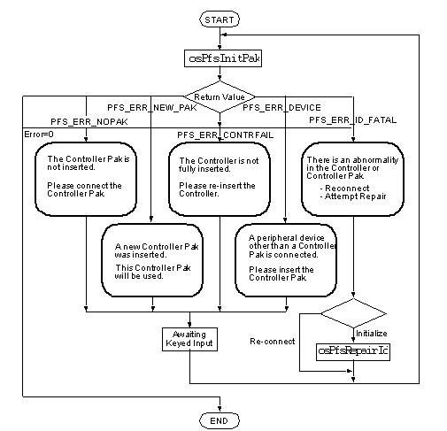
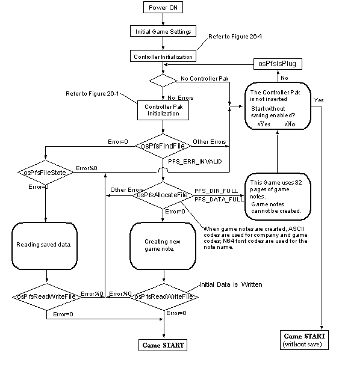
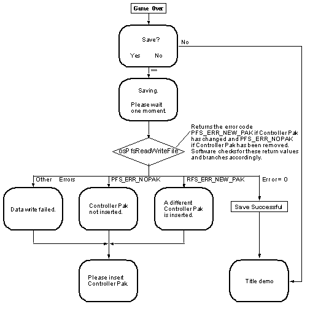
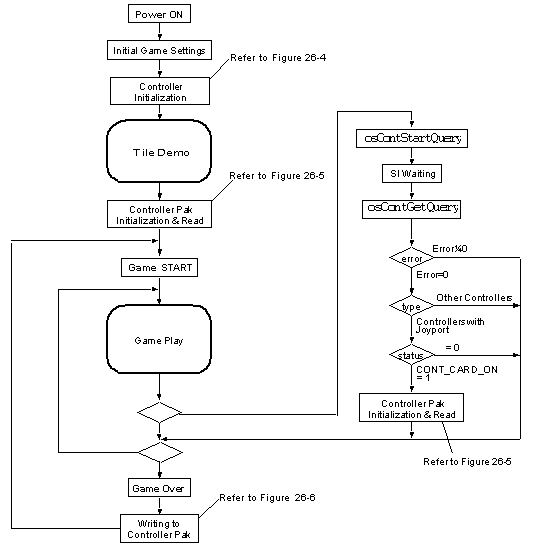
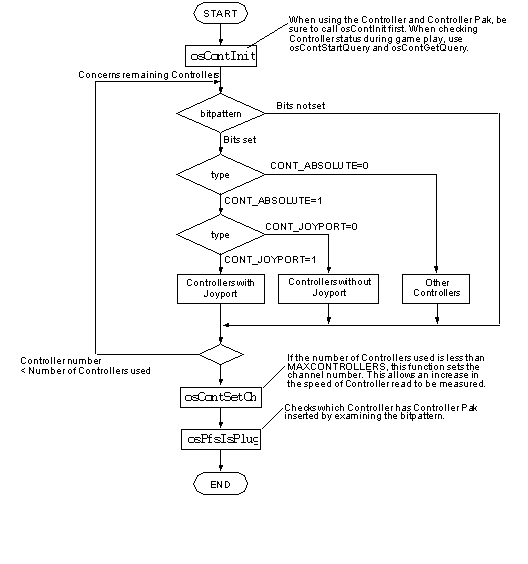
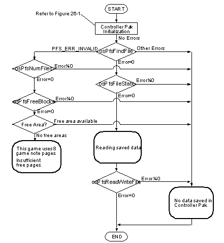
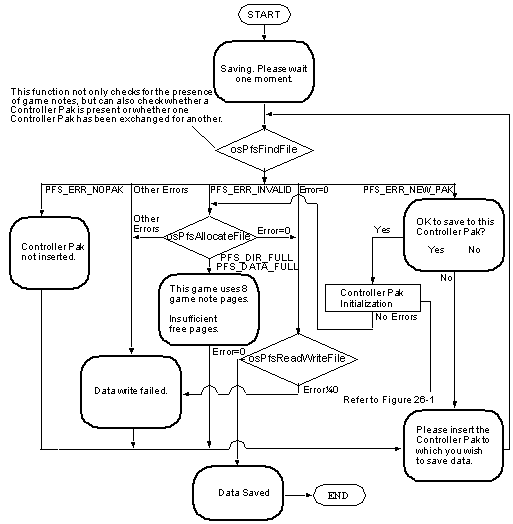
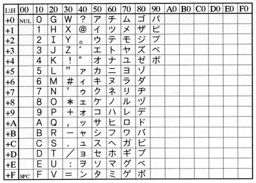
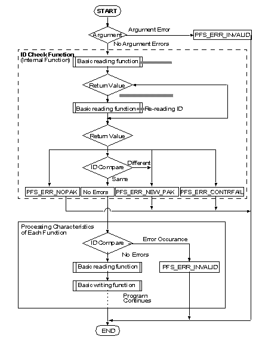
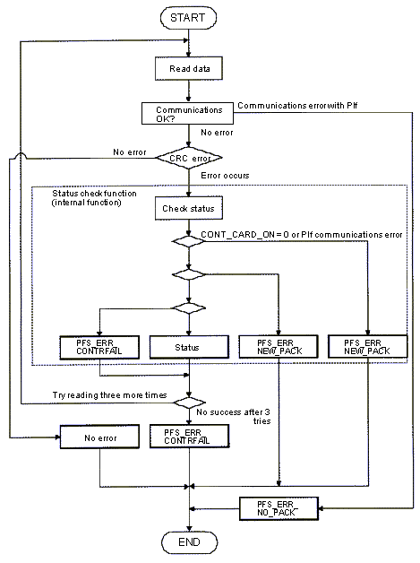

|
|
Controller Pak
What is the Controller Pak?
It is assumed that the Controller Pak will be shared by multiple applications. Consequently, it uses slightly different interfaces from that of the backup memory used in previous Nintendo products. This interface is now included in the Controller Pak Library. For example, if Controller Pak memory is used by the application, data areas must first be obtained through the library.
As a general rule, always access the Controller Pak via the Controller Pak Library. To allow multiple applications to share the Controller Pak, avoid reserving unnecessary data space.
Controller Pak Configuration
Page
For a 256 Kbit Controller Pak (256-Kbit capacity = 32 Kbytes = 128 pages), 5 pages (Pages 0-4) are reserved by the system for game note management. This reserved area totals 1,280 bytes. Consequently, the number of pages that can actually be used by the game is reduced by 5 pages.
The role of each page used by the system is as follows:
Therefore, the effective number of pages available is 123.
Game Note
The application reserves a game note for data storage. As a general rule, the application program must verify that a game note has been reserved by the application or that there is adequate space remaining before the player begins a game. If no usable note is available, a message must be displayed before the game is started, such as “The game can not be saved. Do you still wish to start the game?”. Please make every effort to avoid problems such as displaying a “Cannot Save” message, after a player registers a top score in a game.
The size of the game note can be set individually for each game, provided a new note does not exceed the number of pages remaining. When the note size is set with the library, the size is rounded up to the nearest 256 bytes regardless of the actual number input. Therefore it is recommended that the size be specified in multiples of 256 bytes. An area can be re-sized after it is reserved, but this operation should be performed in such a way that it does not cause problems for a player.
In general, one application should only use one game note. The Controller Pak Library does support multiple notes per application, because it is conceivable that the memory space in the Controller Pak can be used more efficiently, or that the game developer can take advantage of multiple notes. Do not misuse this function by reserving multiple notes without good reason.
Game notes contain the following information:
The character code used is specific to Nintendo (Nintendo font code). Please refer to Section 26.3.5.2, nosLoadFont(). The note name is either the same as the game name or similar to it. If the name is less than 16 bytes long, 0x00 should be stored in the remaining area.
The company code and game code issued by Nintendo are expressed as ASCII code. Note names and note extensions are expressed as N64 font codes. Please refer to the list of N64 font codes contained in the Nintendo 64 Function Reference Manual under nosLoadFont().
Accessing game notes produced by other companies is generally prohibited, except when deleting game notes in the Controller Pak menu. Access only game notes with your company code issued by Nintendo. Those wishing to access game notes produced by other companies are asked to inquire with Nintendo.
Serial Number
Because the current specifications do not provide for switching between different Controller Pak(s) during a game, when a different serial number is detected it should be processed as an error. Contact Nintendo if you wish to enable switching between Pak(s) during a game.
Because this this serial number is read automatically within each function, the application programmer does not need to be particularly concerned with the serial number.
Label
Multinote
Note extension[0] uses 0x00 or a character of the alphabet, and is defined as shown below.
When Multinote is used, the main note is not always necessary.
Please ensure that notes are not interdependent. This is to prevent situations where the user deletes a note and the game cannot proceed using the remaining notes.
Controller Pak Menu
The specifications listed below are suggested to maintain this uniformity. In creating a Controller Pak menu, please ensure that it meets these specifications.
Calling Up the Menu
Menu Functions
The nosPakMenu() function is provided as one example of the Controller Pak menu. This function has been made very simple to keep the program size to a minimum. The function can also be included in the application to limit program size and, because the source code is included, it can be used for creating custom menus.
Several functional limitations have been placed on nosPakMenu() to limit program size. The menu cannot be executed with a Control Stick and only game notes for the Controller Pak inserted into Controller #1 can be deleted. Needless to say, eliminating such restrictions is desirable if program size permits.
In addition, access to game notes produced by other companies should be limited to the “game note deletion” function of this menu. For example, please avoid implementations that provide such access by means other than the Controller Pak menu or provide a menu option of copying the game notes of other companies.
High-Capacity Controller Pak
Nintendo plans to provide details and specifications concerning the high-capacity Controller Pak as soon as a marketing plan is established.
Controller Pak Function Specifications
Syntax
Description
When controlling a file system, a Controller Pak function uses the OSPfs structure pointed to by the pfs argument as a file handle to gain access. This function (osPfsInitPak) initializes that OSPfs structure.
The controller_no argument specifies the Controller number (0~3) into which the Controller Pak is inserted.
The mq argument is the initialized message queue linked to OS_EVENT_SI. Please refer to osSetEventMesg for creation of this link. The message queue (mq) should not be shared, because osPfsInitPak blocks on the message queue (mq). Also, osContInit must be called first, before calling osPfsInitPak to initialize the synchronization at the low level.
The osPfsInitPak function first checks the status and ID area by calling the osPfsChecker function. When the ID is recognized, it checks to see if the file management area is destroyed.
Note that the osPfsInit function automatically performs a repair when the ID area is destroyed completely. However, osPfsInitPak does not perform a repair operation automatically. To repair the ID, you must call osPfsRepairId. Use osPfsInitPak instead of osPfsInit for initializing a Controller Pak. Also, always use osPfsInitPak with osPfsRepairId.
This is necessary because certain addresses could become indeterminate due to a poor connection at the connector or for other reasons. If you use osPfsInit, the function could go to the wrong address, although it was supposed to check the ID. Looking at the data at the wrong address, the function could determine that it is not an ID. In this case, the old osPfsInit function assigns a new ID automatically and it could write the new ID to the wrong address. As a result, the content of the Controller Pak may be destroyed. Therefore, always use the following procedure when initializing a Controller Pak.
To initialize a Controller Pak, always call osPfsInitPak. If 0 is returned, the call is successful. If PFS_ERR_ID_FATAL is returned as the error code, one of the following problems may exist:
When an error occurs, one of the following error conditions is returned:
PFS_ERR_NOPACK
PFS_ERR_NEW_PACK
PFS_ERR_CONTRFAIL
PFS_ERR_ID_FATAL
PFS_ERR_DEVICE
Note: There is a difference between PFS_ERR_ID_FATAL and PFS_ERR_DEVICE. When initializing with osPfsInitPak, the ID management area is checked first. If the function call discovers that the ID management area was destroyed, PFS_ERR_ID_FATAL is returned. If the ID management area was not destroyed, the device ID in the ID management area is checked. If no bit is found in the device ID to show that it is the Controller Pak, PFS_ERR_DEVICE is returned.
Example Code
The Nintendo 64 Controller Pak 256K (Controller Pak) is a removable memory device used with the Nintendo 64 Controller (Controller). The Controller Pak is inserted into the Controller and can be used for purposes such as storing game progress and high scores.
In this section we explain the configuration of the Controller Pak. Please make sure you understand this section, because the specifications are very different from the specifications for Nintendo's backup memory products. Also, note that there are many names such as "page" and "note" which are used only for the Controller Pak.
For easy management of the Controller Pak , memory is delimited by 256-byte boundaries and managed in 256-byte units. Each 256 bytes is termed a “page” and, beginning with memory area 0x0000 ~ 0x00ff, the pages are named Page 0, Page 1, Page 2, . . . Page 127.
To allow the Controller Pak to be shared among different applications, the Controller Pak Library creates a file system which it uses for managing the memory areas. Intuitively, this system can be regarded as a greatly simplified version of the file system used in PC operating systems. In the Controller Pak, files are named “game notes” or simply “notes.” Up to 16 game notes can be created in one Controller Pak.
Company code:
2 bytes
From 0x0001 to 0xffff
Game code:
4 bytes
From 0x00000001 to 0xffffffff
Note name
16 bytes
Use Nintendo's proprietary character code (N64 font code)*9>. The note name is the same as the game name or at least similar to it. If the name is less than 16 bytes long, fill the remaining area with 0x00.
Note extension [0]
1 byte
This extension is used for multiple notes. Normally the extension is 0x00. If additional notes are used, substitute this with 0x10 - 0x33 (N64 font codes '0' - '9' and 'A' - 'Z').
Note extension [1,2,3]
3 bytes
Reserved (always 0x00)
To allow insertion and removal of the Controller Pak to be detected during a game, the serial number is stored in the Controller Pak. In general, each Controller Pak has been assigned a unique number. When the Controller Pak is initialized, this number is read and stored in memory by the Controller Pak Library. Subsequently, each time a Controller Pak is accessed, its number is compared with that in the Controller Pak Library to determine when a different Controller Pak has been substituted.
The Controller Pak contains a 32-byte label area. This area is currently undefined. Although there are functions in the Controller Pak Library that read and write to this area, please do not use these functions. (As of December, 1998)
When reserving multiple notes for an application, create all of these notes using the same company code, game code, and note name. Use the note extension to distinguish between notes.
Note Extension [0]
First note (main note)
0x00
Second note (additional note 1)
0x1a (N64 font code ‘A')
Third note (additional note 2)
0x1b (N64 font code ‘B')
Because the Controller Pk is shared by a number of applications, available space becomes scarce as the Controller Pak is utilized. This necessitates a simple, consistent means by which the user can free up space in the Controller Pak by deleting unnecessary game notes. To prevent confusion at the users’ level, a uniform start-up method is required.
The Controller Pak Library was developed so that it can also be used with a Controller Pak whose capacity exceeds 256 Kbits. The game application does not need to be aware of the Controller Pak capacity.
The following library functions used to handle the Controller Pak in an N64 program. Each of these functions is described in detail below.
Initializes the Controller Pak file handle.
Creates a new game note.
Checks and repairs the Controller Pak file system.
Deletes a game note.
Gets game note information.
Searches for a specified game note.
Gets the free byte size of the Controller Pak.
Checks whether a pak-type SI device is inserted.
Gets the maximum number of notes and the number of notes in use.
Reads/writes data to a game note.
Repairs the file system.
Reads a label.
Writes a label.
#include <ultra64.h>
s32 osPfsInitPak(OSMesgQueue *mq, OSPfs *pfs, int controller_no);
The psPfsInitPak function initializes the Controller Pak's file handle. In other words, it initializes the OSPfs structure pointed to by the pfs argument, which is the file handle for a Controller Pak. Call this function when dealing with the Controller Pak for the first time or when the Controller Pak is initially inserted.
In this case, you must display the message, "The Controller or Controller Pak may not be inserted properly, the content may have been destroyed, or it may be damaged." Then prompt the user to choose between "connect again" or "repair it - the content of the Controller Pak may be destroyed." If the user chooses "connect again," call the osPfsInitPak function again. If the user chooses "repair," call the osPfsRepairId function, and then call osPfsInitPak again.
Some type of PIF error has occurred. Either the Controller Pak is not inserted into the specified Controller or the Controller is not properly connected. To determine which is the case, use osContStartQuery or osContGetQuery function.
A different Controller Pak has been inserted. To use the inserted Controller Pak, initialize it by calling this function (osPfsInitPak) again.
Data transfer to or from the Controller has failed. If a transfer error occurs, up to three tries will be done internally, so this error rarely occurs. If it does occur, it is possible that either the Controller is not connected properly, or the Controller Pak or Controller Socket is damaged.
Although initialization of the file system has been attempted, the ID area was destroyed. The Controller Pak is not connected, it is damaged, or a peripheral device without SRAM is inserted. When this error is returned, follow the initialization procedure outlined above.
During the initialization of the file system, the device ID at page 0 of the ID area was not the Controller Pak's device ID. Something other than a Controller Pak is inserted into the Controller.
void
mainproc(void) {
int i;
u8 contpat;
OSContStatus contstat[MAXCONTROLLERS];
OSPfs pfs[MAXCONTROLLERS];
osContInit(&n_siMessageQ,
&contpat, contstat);
for (i = 0; i < MAXCONTROLLERS ; i ++) {
if ((contpat > >> i) & 1) {
if ((contstat[i].type & CONTT_YPE_MASK)==CONT_TYPE_NORMAL) {
do {
ret = osPfsInitPak(
&n_siMessageQ, &pfs[i], i);
switch(ret) {
case 0:
osSyncPrintf("There is a Controller Pak on PORT %d\n", i);
break;
case PFS_ERR_NOPACK:
osSyncPrintf("No Controller Pak on PORT %d\n", i);
osSyncPrintf("Please connect the Controller Pak\n");
break;
case PFS_ERR_NEW_PACK:
osSyncPrintf("The Controller Pak on PORT %d has been swapped\n", i);
osSyncPrintf("This Controller Pak will be used\n");
break;
case PFS_ERR_CONTRFAIL:
osSyncPrintf("There is a Controller connection problem on PORT %d\n", i);
osSyncPrintf("Please make sure that then Controller is connected properly\n");
break;
case PFS_ERR_DEVICE:
osSyncPrintf("No data can be saved in the Controller Pak on PORT %d\n", i);
osSyncPrintf("Please make sure that the Controller Pak is connected properly\n");
break;
case PFS_ERR_ID_FATAL:
osSyncPrintf("There is a problem with the Controller Pak on PORT %d\n", i);
osSyncPrintf("A Button ... Try to fix it\n");
osSyncPrintf("Other Button ... I will re-connect the Controller Pak\n"); if (AskQuestion(i) == A_BUTTON) {
osPfsRepairId(&pfs[i]);}
break;
}
WaitForPushingAnyButton(i);
} while (ret != 0) ;
} else {
osSyncPrintf("The device on PORT %d is not
a normal Controller\n", i);
}
} else {
osSyncPrintf("No Controller on PORT %d\n", i);
}
}
Function Name - osPfsAllocateFile
Syntax
#include <ultra64.h> s32 osPfsAllocateFile(OSPfs *pfs, u16 company_code, u32 game_code, u8 *game_name, u8 *ext_name, int length, s32 *file_no);
Description
The osPfsAllocate function creates a new game note (file) in a Controller Pak. The company_code (company code), game_code (game code), game_name (note name), ext_name (note extension), and length (size) arguments must be specified as the information for the game note.
The company_code and game_code are specified as ASCII character strings. The game_name and ext_name are specified by N64 font code.
The size of game_name is PFS_FILE_NAME_LEN(16) bytes. If the size is less than 16 bytes, fill the rest with 0x00. Be sure to make the length 16 bytes.
The size of ext_name is PFS_FILE_EXT_LEN(4) bytes. However, only the first byte is actually used. For this code, use '0'-'9', *A*~*Z* (0x10~0x33) of N64 font code. The second through fourth bytes are reserved, so use 0x00.
The size is specified by length, in bytes. Because the smallest internal unit is a page (256 bytes), if length is not specified in multiples of 256, the length will be rounded up to the nearest multiple of 256.
Once this function is successfully called, 0 is returned and the newly created game note's note number (file descriptor) will be returned to file_no. Up to 16 game notes can be created. Therefore, file_no ranges from 0 to 15.
The OSPfs structure pointed to by pfs is the file handle to be initialized by the function osPfsInitPak. Please refer to osPfsInitPak to determine how to create this handle.
If an error has occurred, one of the following error codes will be returned:
PFS_ERR_NOPACK
Some type of PIF error has occurred. Either the Controller Pak is not inserted into the specified Controller or the Controller is not properly connected. To determine which is the case, use osContStartQuery or osContGetQuery.
PFS_ERR_NEW_PACK
A different Controller Pak has been inserted. To use the inserted Controller Pak, initialize it by calling osPfsInitPak.
PFS_ERR_INCONSISTENT
There is a problem in the file system's management area. Usually this error does not occur because osPfsChecker is called internally when you initialize the file system by calling osPfsInitPak. If this error is returned, either the Controller Pak is not connected properly, or the Controller Pak itself is damaged.
PFS_ERR_CONTRFAIL
Data transfer to or from the Controller has failed. If a transfer error occurs, up to three tries will be done internally. Therefore, it is rather rare to see this error. If this error has returned, it is possible that either the Controller is not connected properly, or the Controller Pak or Controller Socket is damaged.
PFS_ERR_INVALID
If this error is returned, an incorrect argument was specified when this function was called, the specified game note does not exist, or the Pfs function has been called without being initialized using osPfsInitPak. Therefore, usually this error is not returned.
PFS_DATA_FULL
Although the creation of a new game note was attempted, one could not be created because there was not enough space in the Controller Pak.
PFS_DIR_FULL
Although the creation of a new game note was attempted, it could be done because the maximum (16) number of game notes have been stored in the Controller Pak.
PFS_ERR_EXIST
Although the creation of a new game note was attempted, it could not be done because the same game note already exists in the Controller Pak.
Syntax
#include <ultra64.h> s32 osPfsChecker(OSPfs *pfs);
Description
The osPfsChecker function inspects the file management area of the Controller Pak. If it finds a damaged area, it attempts a repair operation. If a repair operation is performed, the status bit of the OSPfs structure pointed to by pfs is set to PFS_CORRUPTED. When this is done, data will be lost in most cases.
The pfs file handle that points to the OSPfs is returned by the osPfsInitPak function. See the osPfsInitPak function to determine how to create this handle. Because osPfsInitPak calls osPfsChecker internally, the application programmer will not usually need to use the osPfsChecker function.
If this function (osPfsChecker) is called successfully, 0 is returned. If an error occurs, one of the following error codes will be returned:
PFS_ERR_NOPACK
Some type of PIF error has occurred. Either the Controller Pak is not inserted into the specified Controller or the Controller is not properly connected. To determine which is the case, use the osContStartQuery or osContGetQuery functions.
PFS_ERR_CONTRFAIL
Data transfer to or from the Controller has failed. If a transfer error occurs, up to three tries will be done internally. Therefore, it is rather rare to see this error. If this error has returned, it is possible that either the Controller is not connected properly, or the Controller Pak or Controller Socket is damaged.
PFS_ERR_INCONSISTENT
There is a problem in the file system's management area. Usually this error does not occur because osPfsChecker is called internally when you initialize the file system by calling osPfsInitPak. If this error is returned, either the Controller Pak is not connected properly, or the Controller Pak itself is damaged.
Function Name - osPfsDeleteFile
Syntax
#include <ultra64.h> s32 osPfsDeleteFile(OSPfs *pfs, u16 company_code, u32 game_code, u8 *game_name, u8 *ext_name);
Description
The osPfsDeleteFile function deletes a game note from the Controller Pak. The game note is specified by the company_code (company code), game_code (game code), game_name (note name), and ext_name (note extension)arguments.
OsPfsStructurePfs is a file handle that was initialized by osPfsInitPak. Please see osPfsInitPak for information about how to make this handle.
If this function is called successfully, 0 is returned. If an error occurs, one of the following error codes is returned:
PFS_ERR_NOPACK
Some type of PIF error has occurred. Either the Controller Pak is not inserted into the specified Controller or the Controller is not properly connected. To determine which is the case, use the osContStartQuery or osContGetQuery functions.
PFS_ERR_NEW_PACK
A different Controller Pak has been inserted. To use the inserted Controller Pak, initialize it by calling the osPfsInitPak function.
PFS_ERR_INCONSISTENT
There is a problem in the file system's management area. Usually this error does not occur because osPfsChecker is called internally when you initialize the file system by calling osPfsInitPak. If this error is returned, either the Controller Pak is not connected properly, or the Controller Pak itself is damaged.
PFS_ERR_CONTRFAIL
Data transfer to or from the Controller has failed. If a transfer error occurs, up to three tries will be done internally. Therefore, it is rather rare to see this error. If this error has returned, it is possible that either the Controller is not connected properly, or the Controller Pak or Controller Socket is damaged.
PFS_ERR_INVALID
If this error is returned, an incorrect argument was specified when this function was called, the specified game note does not exist, or the Pfs function has been called without being initialized by using osPfsInitPak. Therefore, usually this error is not returned.
Function Name - osPfsFileState
Syntax
#include <ultra64.h> s32 osPfsFileState(OSPfs *pfs, s32 file_no, OSPfsState *state);
Description
The osPfsFileState function obtains the specified game note information. To specify a game note, use the note number file_no (file descriptor) argument. To retrieve specific game note information, it is necessary to obtain the note number by calling osPfsFindFile, before calling this function. Also, to retrieve all game note information in a Controller Pak, assign 0 to 15 to the file number (file_no) and call osPfsFileState 16 times.
The OSPfs handle must be the handle returned from osPfsInitPak. Please see the osPfsInitPak function for information on how to create this handle.
The game note information is stored in the OSPfsState structure specified by the pointer state argument. Following is the definition of that structure:
typedef struct {
u32 file_size; /*Note Size*/
u32 game_code; /*Game Code*/
u16 company_code; /*Company Code*/
char ext_name[4]; /*Note Extension*/
char game_name[16]; /*Note Name*/
}
If this function is called successfully, a 0 is returned. If an error occurs, one of the following error codes is returned:
PFS_ERR_NOPACK
Some type of PIF error has occurred. Either the Controller Pak is not inserted into the specified Controller or the Controller is not properly connected. To determine which is the case, use the osContStartQuery or osContGetQuery functions.
PFS_ERR_NEW_PACK
A different Controller Pak has been inserted. To use the inserted Controller Pak, initialize it by calling osPfsInitPak.
PFS_ERR_INCONSISTENT
There is a problem in the file system's management area. Usually this error does not occur because osPfsChecker is called internally when you initialize the file system by calling osPfsInitPak. If this error is returned, either the Controller Pak is not connected properly, or the Controller Pak itself is damaged.
PFS_ERR_CONTRFAIL
Data transfer to or from the Controller has failed. If a transfer error occurs, up to three tries will be done internally. Therefore, it is rather rare to see this error. If this error has returned, it is possible that either the Controller is not connected properly, or the Controller Pak or Controller Socket is damaged.
PFS_ERR_INVALID
If this error is returned, an incorrect argument was specified when this function was called, the specified game note does not exist, or the Pfs function has been called without first being initialized by calling osPfsInitPak. Therefore, usually this error is not returned.
Syntax
#include <ultra64.h> s32 osPfsFindFile(OSPfs *pfs, u16 company_code, u32 game_code, u8 *game_name, u8 *ext_name, s32 *file_no);
Description
The osPfsFindFile function searches for a specific game note in the Controller Pak. The company code (company_code), game code (game_code), note name (game_name), and note extension (ext_name) arguments are required to specify the game note.
If the specified game note is found in the Controller Pak, the note number (file descriptor) is returned to the file_no argument. If the game note cannot be found, PFS_ERR_INVALID is returned as the error code.
If this function is called successfully, a 0 is returned. If an error occurs, one of the following error codes is returned:
PFS_ERR_NOPACK
Some type of PIF error has occurred. Either the Controller Pak is not inserted into the specified Controller or the Controller is not properly connected. To determine which is the case, use osContStartQuery or osContGetQuery.
PFS_ERR_NEW_PACK
A different Controller Pak has been inserted. To use the inserted Controller Pak, initialize it by calling osPfsInitPak.
PFS_ERR_INCONSISTENT
There is a problem in the file system's management area. Usually this error does not occur because osPfsChecker is called internally when you initialize the file system with osPfsInitPak. If this error is returned, either the Controller Pak is not connected properly, or the Controller Pak itself is damaged.
PFS_ERR_CONTRFAIL
Data transfer to or from the Controller has failed. If a transfer error occurs, up to three tries will be done internally. Therefore, this error is rarely seen. If this error occurs, it is possible that either the Controller is not connected properly, or the Controller Pak or Controller Socket is damaged.
PFS_ERR_INVALID
If this error is returned, an incorrect argument was specified when this function was called, the specified game note does not exist, or the Pfs function has been called without being initialized by using the osPfsInitPak function. Therefore, usually this error will not be returned.
Function Name - osPfsFreeBlocks
Syntax
#include <ultra64.h> s32 osPfsFreeBlocks(OSPfs *pfs, s32 *bytes_not_used);
Description
The osPfsFreeBlocks function finds the available number of bytes in a Controller Pak. The available number of bytes is returned to the location pointed to by bytes_not_used.
If this function is called successfully, a 0 is returned. If an error occurs, one of the following error codes is returned:
PFS_ERR_NOPACK
Some type of PIF error has occurred. Either the Controller Pak is not inserted into the specified Controller or the Controller is not properly connected. To determine which is the case, use osContStartQuery or osContGetQuery.
PFS_ERR_NEW_PACK
A different Controller Pak has been inserted. To use the inserted Controller Pak, initialize it by calling osPfsInitPak.
PFS_ERR_INCONSISTENT
There is a problem in the file system's management area. Usually this error does not occur, because osPfsChecker is called internally when you initialize the file system by calling osPfsInitPak. If this error does occur, either the Controller Pak is not connected properly, or the Controller Pak itself is damaged.
PFS_ERR_CONTRFAIL
Data transfer to or from the Controller has failed. If a transfer error occurs, up to three tries will be done internally. Therefore, this error is rarely seen. If this error does occur, it is possible that either the Controller is not connected properly, or the Controller Pak or Controller Socket is damaged.
PFS_ERR_INVALID
If this error is returned, an incorrect argument was specified when this function was called, the specified game note does not exist, or the Pfs function has been called without being initialized by using osPfsInitPak. This error rarely occurs.
Syntax
#include <ultra64.h> s32 osPfsGetLabel(OSPfs *pfs, u8 *label, int *length);
Description
The osPfsGetLabel function reads the label of a Controller Pak. A BLOCKSIZE (32 bytes) label area exists in the Controller Pak.
The OSPfs structure's handle must be the handle returned from osPfsInitPak. Please refer to the osPfsInitPak function for information on how to create this handle.
The area specified by the label needs to have the size BLOCKSIZE to store label data.
If this function is called successfully, a 0 is returned and the length of the label is returned to the location pointed to by the length argument.
If an error occurs, one of the following error codes is returned:
PFS_ERR_NOPACK
Some type of PIF error has occurred. Either the Controller Pak is not inserted into the specified Controller or the Controller is not properly connected. To determine which is the case, use the osContStartQuery or osContGetQuery functions.
PFS_ERR_NEW_PACK
A different Controller Pak has been inserted. To use the inserted Controller Pak, initialize it by calling osPfsInitPak.
PFS_ERR_CONTRFAIL
Data transfer to or from the Controller has failed. If a transfer error occurs, up to three tries are done internally, so this error rarely occurs. If it does occur, it is possible that either the Controller is not connected properly, or the Controller Pak or Controller Socket is damaged.
Syntax
#include <ultra64.h> s32 osPfsIsPlug(OSMesqQueue *mq, u8 *bitpattern);
Description
The osPfsPlug function detects which Controller contains a Controller Pak, and it returns the results as a bit pattern to the location pointed to by the bitpattern argument. Bits 0, 1, 2, and 3 of the bit pattern correspond to Controllers 0, 1, 2, and 3, respectively.
The message queue specified by the mq argument must be the initialization completion message waiting line associated with the OS_EVENT_SI event. For information on how to make this association, please see osSetEventMesg.
Because the message queue specified by mq is used for the message waiting within the function osPfsIsPlug, you must ensure that the message queue specified by mq is not shared. In addition, because of synchronous initialization at a low level of the OS, you must call osContInit before calling osPfsIsPlug.
If the function is successfully called, a 0 is returned. Otherwise, 1 is returned.
Example Code
main()
{
OSMesgQueue intMesgQueue;
OSMesg intMesgBuf[1];
OSContStatus sdata[MAXCONTROLLERS];
u8 cont_pattern;
u8 pak_pattern;
osCreateMesgQueue(
osSetEventMesg(OS_EVENT_SI,
osContInit(
osPfsIsPlug(
}
Notes
In addition to osPfsIsPlug, the following functions can be used to check the status of the Controller Pak:
There are, however, differences. The osPfsIsPlug function issues a request command that checks the status of the Controller and Controller Pak. It checks all Controller sockets, converts the results to a bit pattern, and returns them.
In contrast, osPfsInitPak performs processing for only a single Controller. In addition to performing the Controller and Controller Pak status check that osPfsIsPlug performs, it also performs processing such as initializing the OSPfs structure, acquiring the Controller Pak ID and label areas, and calling the osPfsChecker function. As a result, it is very time consuming to call osPfsInitPak to determine whether the Controller Pak is inserted.
For simple status checking, the fastest approach is to use osContStartQuery and osContGetQuery. These functions perform the same processing as the osPfsIsPlug function does and they simplify the error checking process.
Syntax
#include <ultra64.h> s32 osPfsNumFiles(OSPfs *pfs, s32 *max_files, s32 *files_used);
Description
The osPfsNumFiles function acquires the maximum note number and the number of notes used in the Controller Pak. When called, this function returns the number of notes used to the location pointed to by the files_used argument, and it returns the total number of notes to the location pointed to by the max_files argument.
If the function is successful, it returns a 0 as the return value.
If an error occurs, one of following error codes is returned:
PFS_ERR_NOPACK
Some type of PIF error has occurred. Either the Controller Pak is not inserted into the specified Controller or the Controller is not properly connected. To determine which is the case, use the osContStartQuery or osContGetQuery functions.
PFS_ERR_NEW_PACK
A different Controller Pak has been inserted. To use the inserted Controller Pak, initialize it by calling osPfsInitPak.
PFS_ERR_INCONSISTENT
There is a problem in the file system's management area. Usually this error does not occur because the osPfsChecker function is called internally when you initialize the file system with osPfsInitPak. If this error is returned, either the Controller Pak is not connected properly, or the Controller Pak itself is damaged.
PFS_ERR_CONTRFAIL
Data transfer to or from the Controller has failed. If a transfer error occurs, up to three tries will be done internally, so this error is rarely seen. If it does occur, it is possible that either the Controller is not connected properly, or the Controller Pak or Controller Socket is damaged.
PFS_ERR_INVALID
If this error is returned, an incorrect argument was specified when this function was called, the specified game note does not exist, or the Pfs function has been called without being initialized by using osPfsInitPak. Therefore, usually this error is not returned.
Function Name - osPfsReadWriteFile
Syntax
#include <ultra64.h> s32 osPfsReadWriteFile(OSPfs *pfs,s32 file_no, u8 flag, int offset, int nbytes,u8 * data_buffer);
Description
The osPfsReadWriteFile function reads from and writes to game notes. If PFS_READ is specified for the flag argument, data is read from the game note; if PFS_WRITE is specified data is written to the game note.
When data is read, the amount of data specified by the nbytes argument is read, beginning from the offset byte of the game data area specified by the offset argument, and stored in the area pointed to by the data_buffer argument. When data is written, nbytes of data in the area specified by data_buffer is written to the game data area beginning from the offset byte. Both the offset and nbytes arguments must be set to a multiple of BLOCKSIZE (32 bytes) and must be smaller than the file size. The arguments cannot, of course, be set so that data is read from or written to areas outside of those that have been assigned.
The file_no argument specifies the note number (file descriptor). To obtain its value, call the osPfsAllocateFile or osPfsFindFile function.
The OSPfs structure pointed to by the pfs argument is a file handle initialized by the osPfsInitPak function. For information on creating this handle, please see osPfsInitPak.
If the function is successful, 0 is returned as the return value. If an error occurs, one of following error codes is returned:
PFS_ERR_NOPACK
Some type of PIF error has occurred. Either the Controller Pak is not inserted into the specified Controller or the Controller is not properly connected. To determine which is the case, use the osContStartQuery or osContGetQuery function.
PFS_ERR_NEW_PACK
A different Controller Pak has been inserted. To use the inserted Controller Pak, initialize it by calling osPfsInitPak.
PFS_ERR_CONTRFAIL
Data transfer to or from the Controller has failed. If a transfer error occurs, up to three tries are done internally, so this error is rarely seen. If it does occur, it is possible that either the Controller is not connected properly, or the Controller Pak or Controller Socket is damaged.
PFS_ERR_INCONSISTENT
There is a problem in the file system's management area. Usually this error does not occur because osPfsChecker is called internally when you initialize the file system with osPfsInitPak. If this error is returned, either the Controller Pak is not connected properly, or the Controller Pak itself is damaged.
PFS_ERR_INVALID
If this error is returned, an incorrect argument was specified when this function was called, the specified game note does not exist, or the Pfs function has been called without being initialized by using osPfsInitPak. Therefore, usually this error is not returned.
PFS_ERR_BAD_DATA
This is returned when the function (osPfsReadWriteFile) attempts to read data even though the data has not yet been written. If data is written, the PFS_WRITE bit is set to indicate the status of the file information area. When data is read, this bit is checked; if it is not set, this error is returned.
Syntax
#include <ultra64.h> s32 osPfsRepairId(OSPfs *pfs);
Description
The osPfsRepairId function checks the Controller Pak ID area, assigns a new ID if this area is damaged, and repairs the Controller Pak file system.
This function can be used if a PFS_ERR_ID_FATAL error code is returned by the osPfsInitPak function. For details, please see osPfsInitPak.
If the function call is successful, a 0 is returned as the return value.
If an error occurs, one of following error codes is returned:
PFS_ERR_NOPACK
Some type of PIF error has occurred; either the Controller Pak is not inserted into the specified Controller or the Controller is not properly connected. To determine which is the case, use the osContStartQuery or osContGetQuery function.
PFS_ERR_NEW_PACK
A different Controller Pak has been inserted. To use the inserted Controller Pak, initialize it by calling osPfsInitPak.
PFS_ERR_CONTRFAIL
Data transfer to or from the Controller has failed. If a transfer error occurs, up to three tries will be done internally, so this error is rarely seen. If it does occur, it is possible that either the Controller is not connected properly, or the Controller Pak or Controller Socket is damaged.
PFS_ERR_ID_FATAL
The ID area was damaged when the file system was initialized. Repair was attempted but failed. The Controller Pak is broken, not properly connected, or a peripheral device with no SRAM is connected.
PFS_ERR_DEVICE
When the device ID in the ID area of page 0 was checked at system initialization, it did not match the device ID of the Controller Pak. In other words, a device other than the Controller Pak is inserted into the Controller.
PFS_ERR_INVALID
This error can occur if the Pfs function is called without being initialized by osPfsInitPak(). This error can also occur if a Controller Pak function is executed after the "pfs" file handle structure has been initialized by some function other than osPfsInitiPak(), which is the initialization function for the Controller Pak. For example, this error occurs when osPfsRepairId() is executed after the pfs structure has been initialized by osMotorInit(), which is the initialization function for the Rumble Pak. When this error is returned, please review the process of your game program.
Syntax
#include <ultra64.h> s32 osPfsSetLabel(OSPfs *pfs, u8 *label);
Description
The osPfsSetLabel function writes to the Controller Pak label, which is a 32-byte label area in the Controller Pak. Write data specified by the label argument to the label area.
The OSPfs structure (pfs) is a file handle initialized by a call to osPfsInitPak. For information concerning the creation of this handle, see osPfsInitPak.
If the function is called successfully, a 0 value is returned.
If an error occurs, one of the following error codes is returned:
PFS_ERR_NOPACK
Some type of PIF error has occurred; either the Controller Pak is not inserted into the specified Controller or the Controller is not properly connected. To determine which is the case, use the osContStartQuery or osContGetQuery function.
PFS_ERR_NEW_PACK
A different Controller Pak has been inserted. To use the inserted Controller Pak, initialize it by calling osPfsInitPak.
PFS_ERR_CONTRFAIL
Data transfer to or from the Controller has failed. If a transfer error occurs, up to three tries will be done internally. Therefore, this error is rarely seen. If get this error, it is possible that either the Controller is not connected properly, or the Controller Pak or Controller Socket is damaged.
|  |
Figure 26.3.2 Example 1 - Setting Controller Pak at Game Start (fig 1)
|  |
Figure 26.3.2 Example 1 - Setting Controller Pak at Game Start (fig 2)
|  |
Figure 26.3.3 Example 2 - Controller Pak is Changed During a Game
|  |
Controller Initialization
|  |
Controller Pak Initialization and Read
|  |
Controller Pak Write
|  |
Controller Pak Menu Functions
A utility function library and sample program for the Controller Pak menu are available in /usr/src/PR/demos/nosPak. The English-language version of the library is named libnos.a.
When linking, use the -lnos or -lnos_jpn option before -lultra (-lultra_d). For details, refer to the Nintendo 64 Function Reference Manual under libnos.a or libnos_jpn.a.
The functions that can be used with this library are as follows.
| nosPakMenu(): | a simple Controller Pak menu |
| nosLoadFont(): | expands the font data for English-language characters and Katakana in memory |
A sample that incorporates nosPakMenu in onetri is available in /usr/src/PR/demos/nosPak/test.
In addition, if you wish to use a font which is used in this module, nosLoadFont can be used by an application. This function can be used without linking to nosPakMenu.
The N64 font codes are defined in the file ncode.h, included in the Nintendo 64 Software Library.
Function Name - nosPakMenu
Syntax
#include <libnos.h> int nosPakMenu (OSMesgQueue *siMessageQ, OSMesgQueue *retraceMessageQ);
Description
The nosPakMenu() function is a simple Controller Pak menu application. The game player can use this menu to view a list of game notes stored in the Controller Pak, to check the number of pages used and the number of pages remaining, and to delete unnecessary game notes.
siMessageQ is the initialized message queue associated with OS_EVENT_SI events, while retraceMessageQ is the initialized message queue associated with vertical retraces. To learn how to create these associations, see the osSetEventMesg(),and osSetEvent() functions, in the N64 Online Function Reference Manual.
To open the menu, the user must press the START button on the Controller while the program is booting up or being Reset. The menu does not open up if the START button is not pressed and the Controller Pak is not inserted in the Controller.
The following values are returned as error codes:
| Condition | Returned Value |
| When the Controller Pak is not ready | 0 |
| When an error occurs in the Controller Pak menu | 1 |
| When the Controller Pak is OK but the START button is not pressed | 2 |
| When EXIT is selected in the Controller Pak menu | 3 |
Function Name - nosLoadFont
Syntax
#include <libnos.h> void nosLoadFont (u16 *font_buf);
Description
The nosLoadFont() function expands the compressed character font data in RAM in the order of the N64 font codes so the fonts can be used by the application. The start address of the buffer where the data will be expanded is specified as an argument. The necessary size of the buffer is shown below:
| English | 2112 bytes (0x840) | Defined in libnos.h as FONTSIZE_E. |
| English + Japanese | 4768 bytes (0x12a0) | Defined in libnos.h as FONTSIZE_J. |
The character font size is 16 dots (horizontal) x 16 dots (vertical). One horizontal line of 16 dots corresponds to 16 bits of data. The Hi side is the left side of the font, while the Lo side is the right side.
The N64 font codes for the character fonts is shown in order below:

Internal Functions
The following flowcharts show how errors are handled within Controller Pak functions. Please use these flow charts as a reference.
Figure 26.3.4 Processing Flow and Error Generation Inside a General Pfs Function
|  |
Basic Read Function
|  |
|
Copyright © 1999 Nintendo of America Inc. All Rights Reserved Nintendo and N64 are registered trademarks of Nintendo Last Updated January, 1999 |